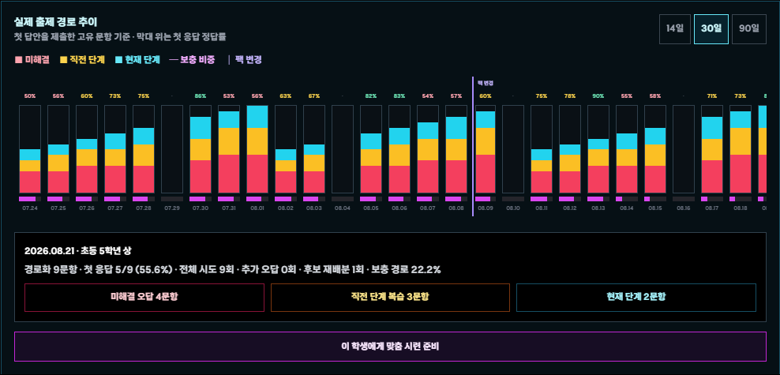

대장간·잠재력
대장간·잠재력골드로 장비를 강화하고 잠재력 옵션을 연구합니다.
공통 안내 · 교사 길드 운영 · 학생 학습과 게임 성장 · 개인정보와 문제 해결

VOCA HERO!는 영단어 퀴즈의 정답과 반복 학습을 캐릭터 성장·수집·길드 협동에 연결하고, 교사가 학생별 학습 내용을 배정하고 성취를 분석할 수 있는 웹 기반 영어 학습 게임입니다.
새 계정에는 학교명·실명·반·번호·주소·전화번호를 저장하지 않습니다.
연동은 새 용사를 추가로 만드는 기능이 아닙니다.
| 학생 | 교사 |
|---|---|
| 인증 UID, 닉네임, 학습 학년, 게임 진행·학습 기록과 설정 | Google 인증, 교사 이름, 학교명, 재직 확인 자료와 길드 관리 기록 |
| 교사에게 길드 닉네임과 학습·게임 성취가 표시됩니다. | 이름·학교는 재직 확인과 같은 학교 길드 연결에 사용됩니다. |
업데이트 이전 기록이 있는 경우 가입 화면의 기존 게임 기록 가져오기를 이용합니다. 예전 학교·반·번호·이름은 기존 기록을 한 번 찾는 용도로만 사용하며 새 계정에는 저장하지 않습니다.

실제 초대·권한 관리 화면. 식별 정보는 자료용 예시 이름으로 익명화했습니다.
길드 목록 → 길드 카드 → 길드원 관리

개인·그룹·전체 및 향후 가입자에게 설정할 수 있습니다.

학생별 현재 누적팩·일반/보충 경로와 14·30·90일 문항 수·첫 응답 정답률·보충 비율을 확인합니다.
길드 카드 → 시련

길드 동일 문항 또는 학생별 맞춤 문항을 고르고 배포 전 구성을 확인합니다.
| 항목 | 규칙 |
|---|---|
| 문제 수 | 5·10·15·20문제 |
| 문제 유형 | 뜻 고르기, 영어 고르기, 철자 입력, 철자 배열 |
| 도전 | 전체 문제 최대 3회, 모두 맞히면 극복 |
| 힌트 | 객관식 오답 2개 제거 / 입력형 첫 글자·영문 글자 수 |
| 극복 보상 | 어느 회차든 최초 100점 시 문제당 코인 5개·포인트 10P, 한 번만 지급 |

퀴즈 전투가 학습의 중심이며 성장 기능은 정답 보상과 연결됩니다.
대장간·잠재력골드로 장비를 강화하고 잠재력 옵션을 연구합니다.
 펫·유물
펫·유물소환수 효과는 누적되며 유물은 전투·학습 효과를 제공합니다.
 마법 스킬
마법 스킬퀴즈 FP로 캡슐을 열어 획득·성장하고 최대 4장을 장착해 사용합니다.
 차원 영웅
차원 영웅외형 등급 장착 효과와 등급별 도감 효과를 모읍니다.
 길드 상점
길드 상점길드 코인으로 외형·강화 보호·재화 교환을 이용합니다.
 길드 효과
길드 효과길드 기여 포인트를 투자해 모든 길드원이 공유하는 효과를 성장시킵니다.
| 스테이지 | 대표 해금 |
|---|---|
| 20 | 무구 잠재력 연구소 |
| 30 | 고대 유물 소환 제단 |
| 45 / 55 / 65 | 목걸이 / 팔찌 / 반지 |

스킬을 봉인하고 해제 퀴즈를 요구하는 고유 패턴입니다. 단어·뜻 4지선다, 철자 순서 맞추기, 빈칸 넣기 중 무작위 문제가 나오며 해제 퀴즈 동안에는 월드보스 시간이 멈춥니다. 봉인이 풀리고 쿨타임이 아니라면 스킬이 즉시 시전됩니다.
| 문제 | 조치 |
|---|---|
| Google 이어하기가 다른 용사를 엶 | 연동했던 정확한 Google 계정인지 확인 |
| 개별 설정이 반영되지 않음 | 교사 저장 완료·선택 학생 확인 후 학생 새로고침/재실행 |
| 길드 초대가 안 됨 | 영문·숫자 6자리와 코드 갱신 여부 확인 |
| 월드보스 이어하기가 안 보임 | 같은 날짜·같은 계정인지 확인. 날짜가 바뀌면 이전 피해로 정산 |
| 입력 중 한글·숫자를 누름 | 오답 처리되지 않으므로 해당 부분을 지우고 계속 입력 |